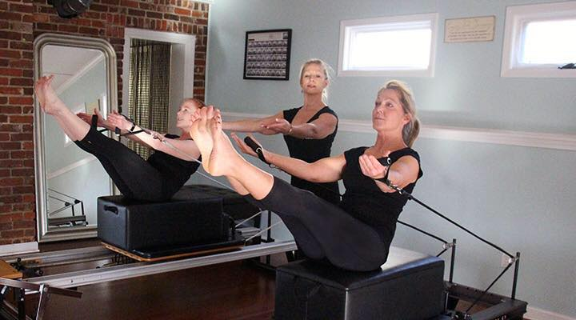

After earning her BFA from FSU in 1985, Ms. Roelle studied the Pilates method for 10 years in California while pursuing a career in dance. Katy's experience as a professional ballet dancer/choreographer led her to touring south pacific and the orient with Princess Cruise Lines. Katy has been a consultant for amateur and professional athletes across the United States.
Her foundation and focus is in classical Pilates. Extensive understanding of biomechanics and functional movement, along with years of teaching experience, enables her to develop and teach techniques used in injury prevention and rehabilitation, sport-specific, geriatric, and special population training.
Katy has been creating and spearheading Pilates teacher training courses for nearly a decade in high-end health clubs and private Pilates studios, such as:
Reformation Pilates trained instructors currently teach in Georgia, Tennessee, Texas, Florida, Colorado, California, Brazil, Italy and Peru at LA Fitness', YMCAs, Churches, Pilates studios, and dance studios.
Ms. Roelle currently dances with Lee Harper Dancers, and the Atlanta Symphony Orchestra.
All instructors have participated in an in depth formal Pilates training program including the traditional method of Pilates as well as the contemporary approach. A minimum of 3 years of Pilates experience combined with anatomy of movementand apprenticeship under the Reformation style of Pilates taught by Katy Roelle.
Pilates is a highly disciplined and analytical method of exercise. Because of the form-intensive nature of the exercises, it is important to learn from and apprentice under trainers who are skilled in the Joseph Pilates' original method, and who understand functional anatomy and the biomechanics of exercise. Reformation Pilates Studio is pleased to provide such a program. Group fitness instructors, personal trainers, yoga instructorsand Pilates students are all great candidates for Pilates certification. For more information, call 770-401-0203 or contact us here.
